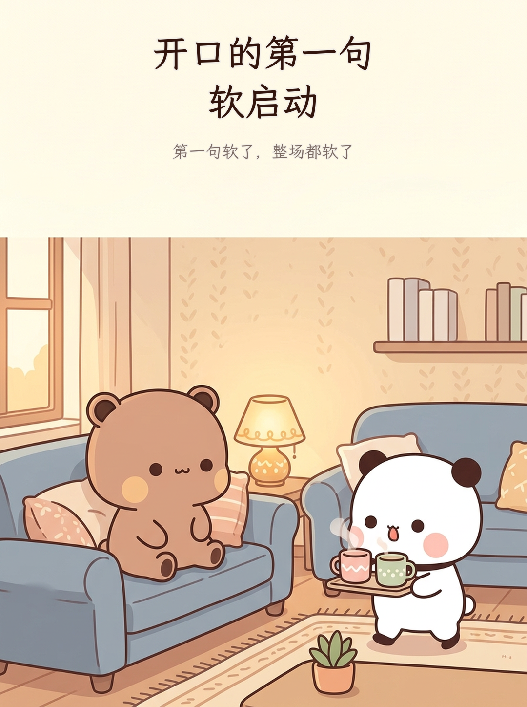
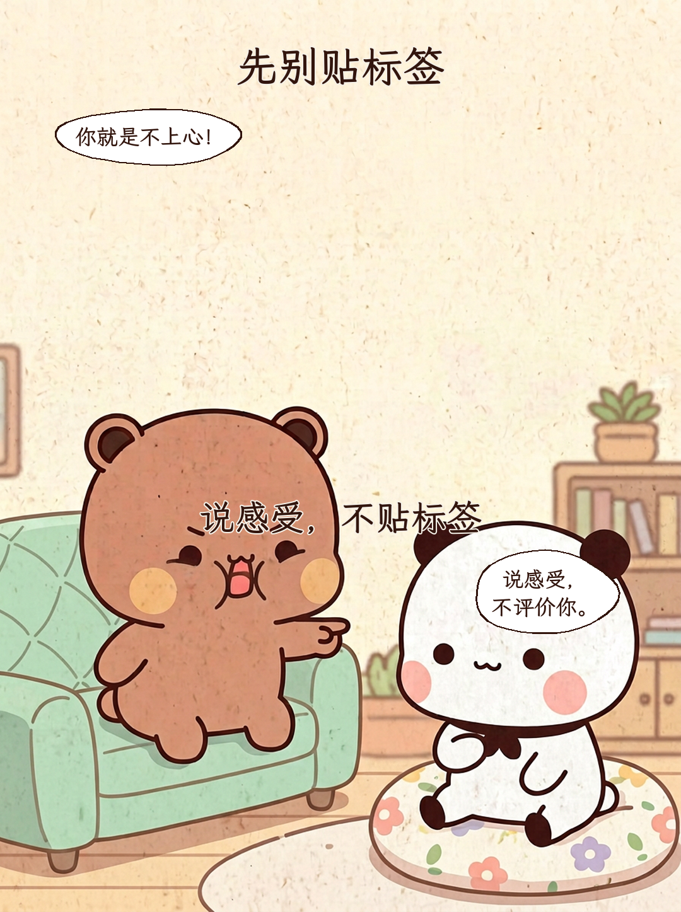
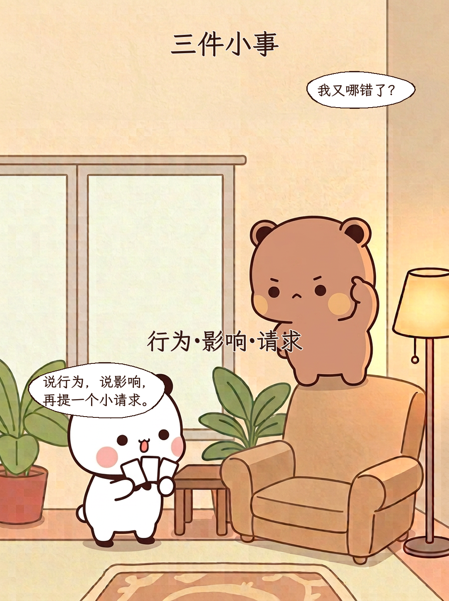
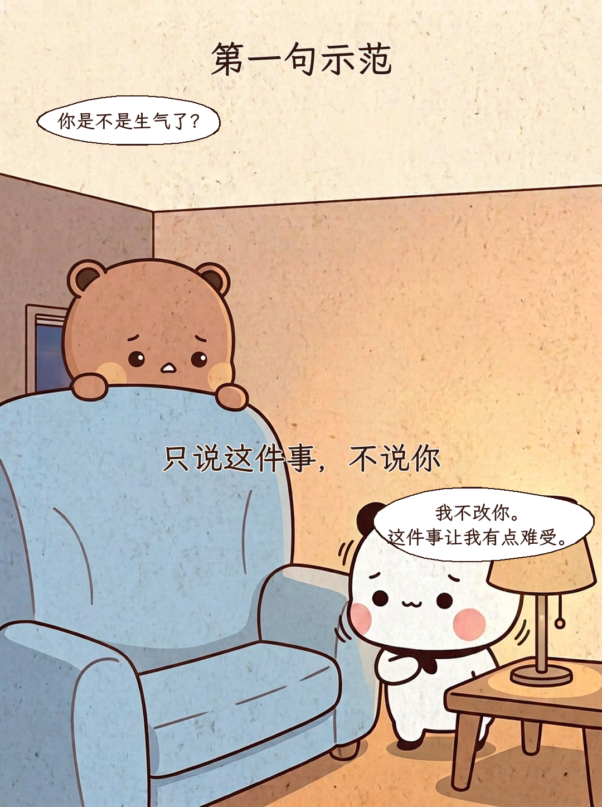
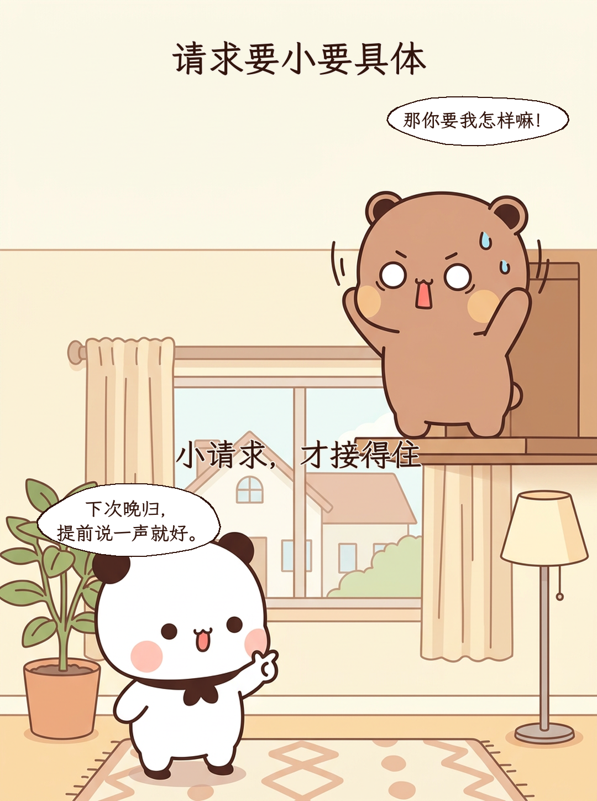
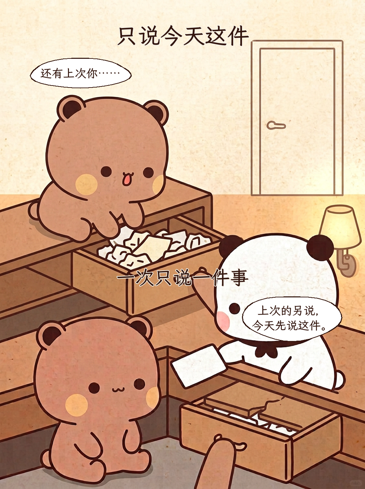
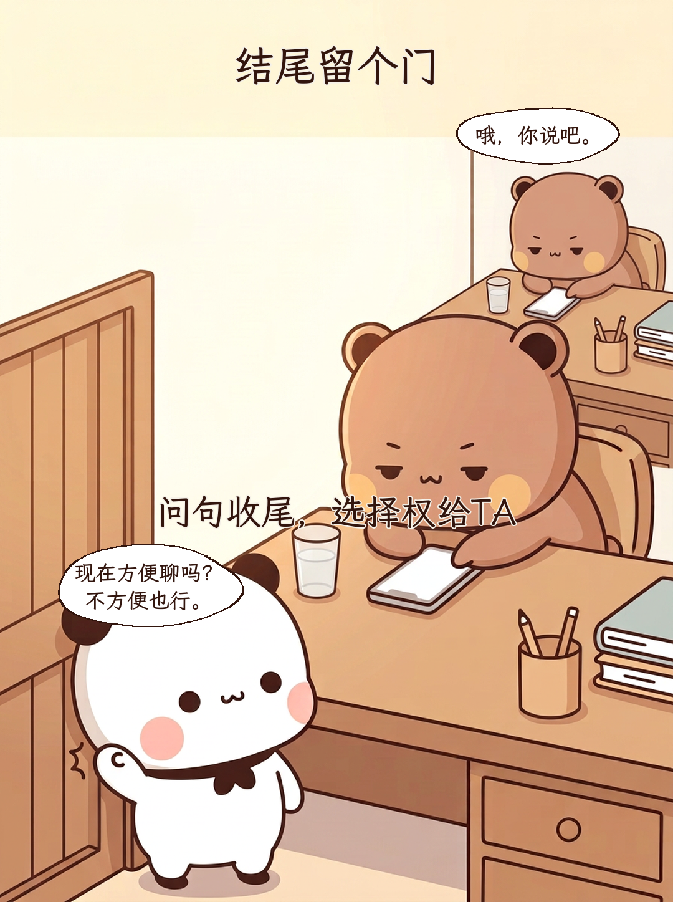
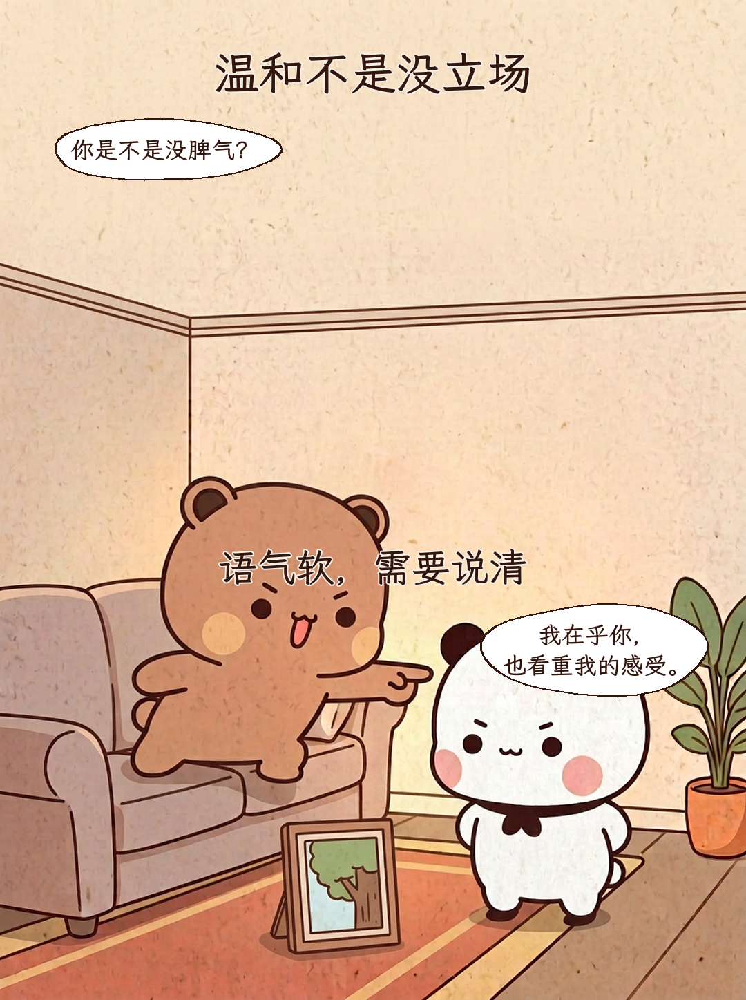
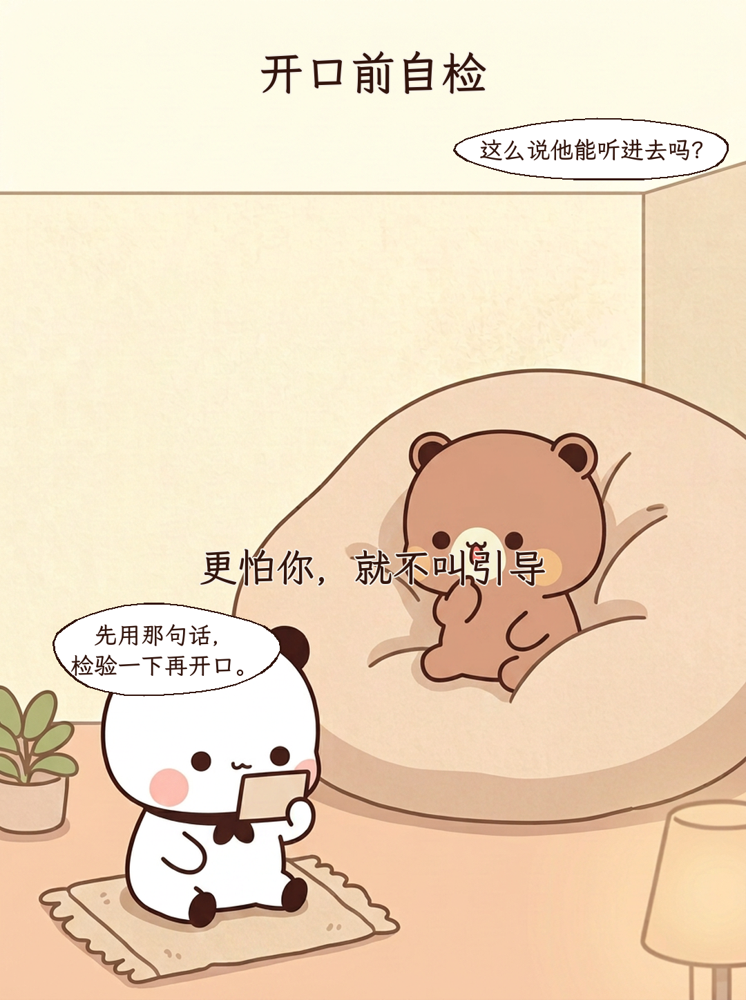
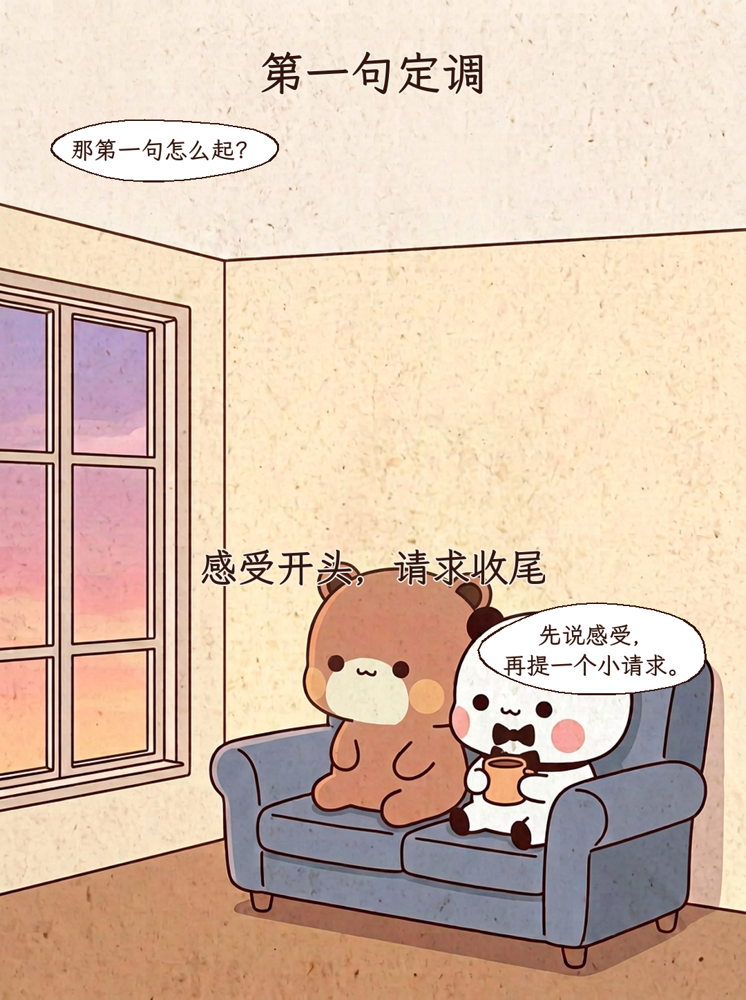

开口的第一句 软启动
第一句软了，整场都软了

先别贴标签
说感受，不贴标签
你就是不上心！ / 说感受， 不评价你。
三件小事
行为·影响·请求
我又哪错了？ / 说行为，说影响， 再提一个小请求。
第一句示范
只说这件事，不说你
你是不是生气了？ / 我不改你。 这件事让我有点难受。
请求要小要具体
小请求，才接得住
那你要我怎样嘛！ / 下次晚归， 提前说一声就好。
只说今天这件
一次只说一件事
还有上次你…… / 上次的另说， 今天先说这件。
结尾留个门
问句收尾，选择权给TA
哦，你说吧。 / 现在方便聊吗？ 不方便也行。
温和不是没立场
语气软，需要说清
你是不是没脾气？ / 我在乎你， 也看重我的感受。
开口前自检
更怕你，就不叫引导
这么说他能听进去吗？ / 先用那句话， 检验一下再开口。
第一句定调
感受开头，请求收尾
那第一句怎么起？ / 先说感受， 再提一个小请求。